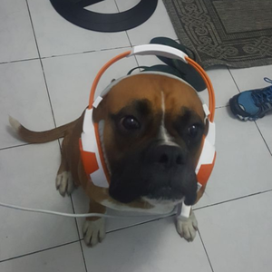

streamer parceiro da Twitch · VALORANT · pt-BR
oi, eu sou o lula molusco
radiante desde o beta, mono Chamber, 24 anos e calvo.
Live todo dia, das 8 às 16.
- Twitch
- ~150 mil seguidores (aprox.)
- TikTok
- ~16,8 mil (aprox.)
- X
- ~12,5 mil (aprox.)

cartão de visita
Um molusco, um agente só.
O lulavlr é o “lula molusco” do VALORANT brasileiro: streamer parceiro da Twitch que joga de Chamber — e só de Chamber. “Mono chamber” está na bio do X, “monochamber” na do TikTok, e o título da live não deixa dúvida: rankeds do top 1 Chamber.
Rotina de trabalhador: live todos os dias das 8h às 16h, com sessões que costumam passar de seis horas de ranked em lobby radiante. O humor vem junto — autodeclarado “24 anos e calvo”, ele reage às mudanças do próprio agente com um “galera?????? precisava de tudo isso???”.
- AgenteChamber (mono)
- EloRadiante desde o beta
- PlataformaTwitch Partner
- IdiomaPortuguês (BR)
expediente
Bate o ponto às 8, sai às 16.
recortes de tinta
Direto da timeline.
Posts reais do @lulavlr no X — clique para ver o original.
top 1 chamber 🌎mai. 2026
Maior especialista de chamber das Américas 😎😀out. 2026
galera?????? precisava de tudo isso???out. 2026 · sobre o nerf do Chamber
zerei o jogo galera ganhei todas do dia.mar. 2026
que dia que a riot vai fazer um campeonato mundial de streamer pré masters/champions?😓 (ia bombar ctz)mai. 2026
o arsenal
Setup, como está no “Sobre” da Twitch.
- GPURTX 2080 Ti
- CPURyzen 7 7800X3D
- Placa-mãeB650M Plus
- Memória2× DDR5 16 GB 6800 MHz
- FonteZM 600-LX
- MonitorBenQ 400 Hz
- MouseLamzu Maya X 8
- TecladoVGN Neon75 Ultra
- HeadsetLogitech G Pro X Wireless
mídia kit · carta-convite
Sua marca no lobby do top Chamber.
O que o canal entrega
- ~150 mil seguidores na Twitch (aprox.), canal parceiro.
- Live diária de ~8 horas, das 8h às 16h — alcance no horário comercial, todo dia.
- Média de ~640 espectadores nos últimos 30 dias (aprox., fonte: castaccord.com, out. 2026).
- Público de VALORANT ranqueado, em português, com conteúdo 100% focado no jogo.
- Alcance extra em X, TikTok, YouTube e Kick.
Formatos possíveis
- Comando no chat e no título da live (o canal já usa
!operagx,!bonoxs,!goatgear,!univava). - Sorteios e ações ao vivo com a comunidade.
- Periféricos e setup em destaque.
- Publis em clipes, X e TikTok.
Contato comercial
lulavlrcontato@gmail.com